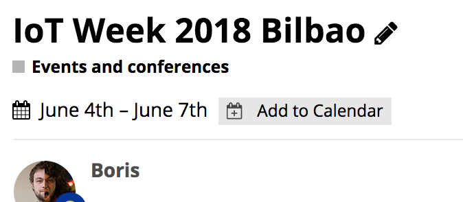

On a call this morning @Mariechoetarp and the communications team expressed the need for a category where we can discuss events to meet at and conferences that connect to SCORE. Thus the ‘Events and conferences category’ was born.
Every new topic is ‘Wiki’ by default, meaning everyone can edit the original message, so keep that updated with the general information about the event and have the discussion underneath!
For all of your scheming, meeting up and telling each other where the best parties are at 
Posting an event
Just go to the category ‘Events and conferences’ and make a New Topic. Once in there, use the ‘Add date and time’ button to add the date and time.
{kind=link}
Make sure to select ‘Include end date’ for multiple date events, also using ‘all day event’ if probably recommended for that as well.
Viewing a calendar
The default view of the category is an Agenda, an ordered list of the events. If you like a more traditional calendar view more, select the ‘Calendar’ tab from the top menu, it will give you a grid like you are used to.
{kind=link}
Adding events to your own calendar
To add an event to your own calendar you can use the ‘Add to calendar’ button in the topic. This supports Google Calendar and downloading an ICS file.

Happy meeting! And as always, let us know your feedback on this community site